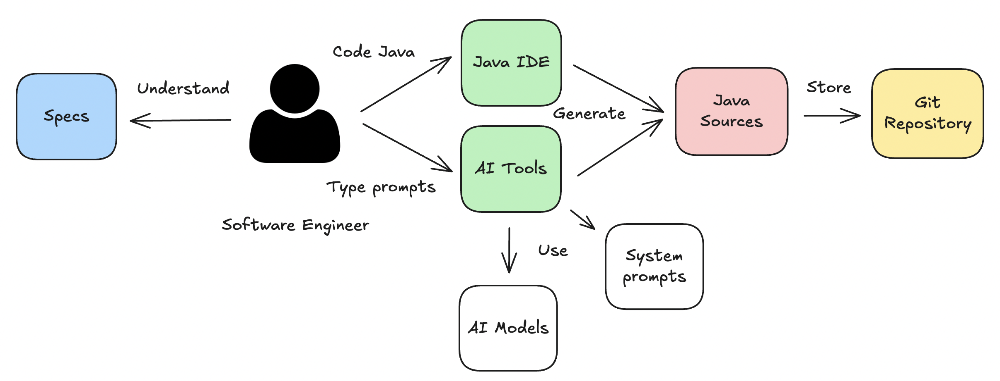
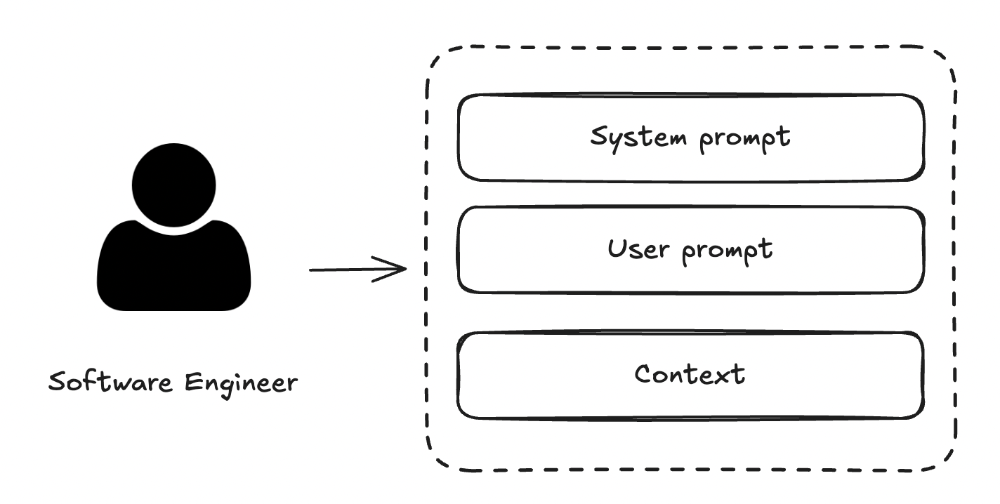

Stenographic Figure, Jackson Pollock (1943)
Museum of Modern Art (MoMA)
Abstract expressionism
|
Juan Antonio Breña Moral Software Engineering Manager @ Capital One, C1
Twitter | Github | LinkedIn |
|
|
"Make it work, make it right, make it fast." - Kent Beck "Lead me, follow me, or get out of my way.", "Pressure makes diamonds." - George S. Patton Jr. |
|
Software Development workflow has evolved with the raise of AI tools enhancements.
A prompt is an instruction, question, or input given to an AI system to generate a response. It's essentially how you communicate with AI to get it to do what you want.
Example:
Can you create a JMH benchmark
in order to know what is the best implementation?
A prompt could be enahanced with the help of a system prompt or a context.
A system prompt is a set of instructions given to an AI model that defines how it should behave. Think of it as the "operating manual" that shapes the AI's personality, capabilities, and boundaries.
A system prompt can include the following elements:
| Role | Context | Goal |
| Constraints | Instructions | Examples |
| Output format | Safeguards | Metadata |
Valid for:
Anthropic Claude Sonnet,
OpenAI ChatGPT,
Google Gemini &
xAI Grok.
Examples:
128-java-generics.md
131-java-unit-testing.md
2003-agile-create-user-story.mdc
2006-adr-create-functional-requirements-for-rest-api-development.mdc
System prompts can help Engineering teams reduce ambiguity in the way that models answer their questions while increasing the homogeneity and consistency of results across different interactions and team members.
Lets see with a Live demo.
Goal: Implement Result Type prototype in Java in the development to avoid Java exceptions propagation.
Step 1: Create a Result Type based on a User prompt
User prompt:
Create an Result type in java
Step 2: Refactor the first implementation taking ideas from Kotlin
User prompt:
Evolve the first implementation of Result Type
taking ideas from Kotlin:
https://kotlinlang.org/api/core/kotlin-stdlib/kotlin/-result/
Step 3: Refactor the second implementation using a System prompt
User prompt:
Refactor the second implementation
using the cursor rule @128-java-generics from the url:
https://raw.githubusercontent.com/jabrena/cursor-rules-java/refs/heads/main/.cursor/rules/128-java-generics.md
and not make any question
Step 4: Verify results
Explain why the third version is better than the second one
and the second one is better from the first one
Use a table to explain the benefits between all 3 versions
Thanks